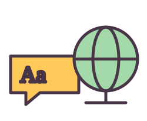
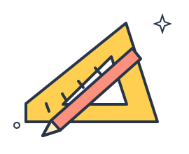
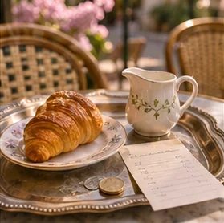
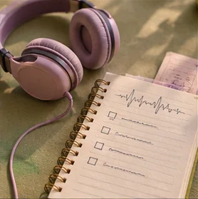
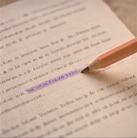
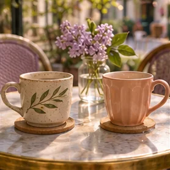
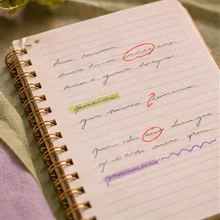

Listen for detail
Catch names, prices and times in a short exchange.

Practise everyday conversations with your tutor.
Catch names, prices and times in a short exchange.

Collect expressions that fit everyday situations.

Take turns asking and answering with your tutor.

Repeat the conversation with one detail changed.
Choose an activity to bring to your next session.
Choose a goal to see the activities you can work through with your tutor.


Keep a record of sounds you can recognise.
Save expressions from your own role-play.
Take a recording task into the week.
Hear a short exchange before trying it.

Listen firstBring a conversation you expect this week.

Use real situationsAsk a question and practise answering it.

Take both rolesCompare your second attempt with the first.
$25USD · 30 minBring one sticking point and practise a way through it.
Request this session$40USD · 50 minSpend the lesson using a skill with feedback as you go.
Request this sessionBring a draft, presentation or solution for a detailed review.
Request this sessionChoose a language, a starting level and a real conversation you would like to practise.
Ask about language lessonsYes. Tell us which language you want to learn. Your tutor can start with greetings, simple questions and listening for familiar words.
Write the language you want to practise in your request. We will confirm whether a suitable tutor is available before arranging a time.
Bring a situation such as introducing yourself in a meeting or explaining a delay. You can rehearse both sides of the conversation with your tutor.
Choose a phrase that is hard to say. Listen to your tutor, repeat it slowly, then try it again in a short exchange.
A notebook and a way to hear and speak to your tutor are enough to begin. If you already use a coursebook, mention it when requesting your lesson.
Bring a situation you want to handle in your own words.